Algoritmo de Floyd-Warshall
Problema do menor caminho
Motivação do problema:

Você é um estudante de comp muito curioso e está aprendendo a resolver o cubo mágico! No entanto, como ainda está aprendendo, comete alguns erros, não aprendeu alguns passos completamente e acaba se perdendo ao resolver o cubo. Agora, imagine que com seus conhecimentos, você pudesse mapear todos os caminhos possíveis entre o estado atual e o estado desejado.
Além disso, você quer saber como resolver o cubo de várias maneiras diferentes para ter certeza de que é um mestre em montá-lo. Existem muitos algoritmos para resolver o cubo, mas o algoritmo Floyd-Warshall, em particular, é muito ambicioso, pois calcula todas as rotas possíveis entre os estados do cubo.
No problema de resolver o cubo, ele retornaria todos os movimentos necessários para terminá-lo, incluindo o menor caminho possível, e seria possível comparar com todos os outros para ver o quão eficiente você foi.
Neste material, vamos introduzir a ideia do algoritmo e, se você for igual ao Peru, vai fazer o algoritmo de montar o cubô magico assim que acabar a aula kkkkkk.
Você também pode criar
-
listas;
-
ordenadas,
assim como
-
listas;
-
não-ordenadas
e imagens. Lembre que todas as imagens devem estar em uma subpasta img.
Para tabelas, usa-se a notação do MultiMarkdown, que é muito flexível. Vale a pena abrir esse link para saber todas as possibilidades.
| coluna a | coluna b |
|---|---|
| 1 | 2 |
Ao longo de um texto, você pode usar itálico, negrito, vermelho e tecla. Também pode usar uma equação LaTeX: \(f(n) \leq g(n)\). Se for muito grande, você pode isolá-la em um parágrafo.
\[\lim_{n \rightarrow \infty} \frac{f(n)}{g(n)} \leq 1\]
Para inserir uma animação, use : seguido do nome de uma pasta onde as
imagens estão. Essa pasta também deve estar em img.
Implementação em Alto Nível | Como Funciona o Algoritmo?
Após apresentado o problema que o Algoritmo propõe resolver, será abordado mais a fundo como este algoritmo funciona, quais os inputs e outputs esperados em sua implementação e demonstrado alguns exemplos práticos.
Iniciando por seu Input, o Floyd Warshall recebe um Grafo - uma matriz de pesos, que representam a complexidade de viajar de um ponto até outro, ou, em outras palavras os pesos das arestas. E utiliza de 3 loops de for para passar por todos os elementos do Grafo recebido. Como é possível ver, abaixo têm uma representação de como seria implementado deste algoritmo:
PseudoCode:
def floydWarshall (grafo):
dist = grafo
for k in range (n):
for i in range (n):
for j in range (n):
if dist[i][j] > dist[i][j] + dist[k][j]:
dist[i][j] = dist[i][k] + dist[k][j]
return dist
Animação:
Buscando entender melhor como o PseudoCode interage com a matriz de grafos levando a construção de uma nova Matriz que terá os menores caminhos abaixo encontram-se duas animações. A primeira é a animação de Nodes e a segunda de Matrizes:
Mapa de Nodes


 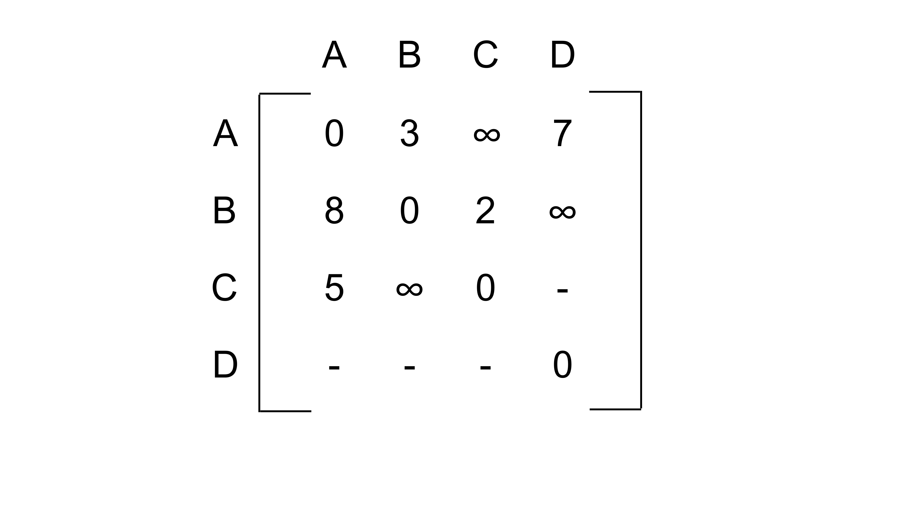
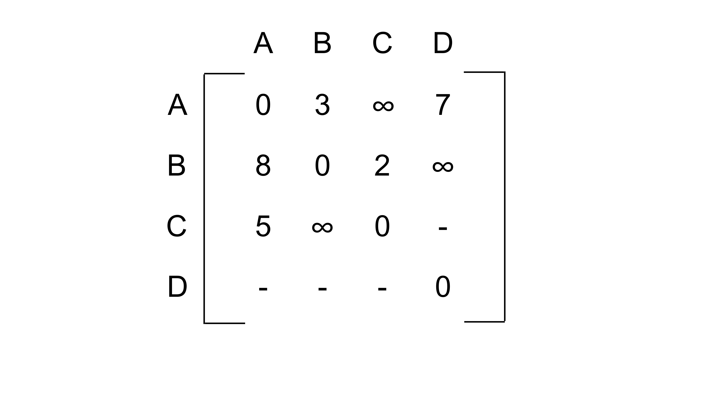

 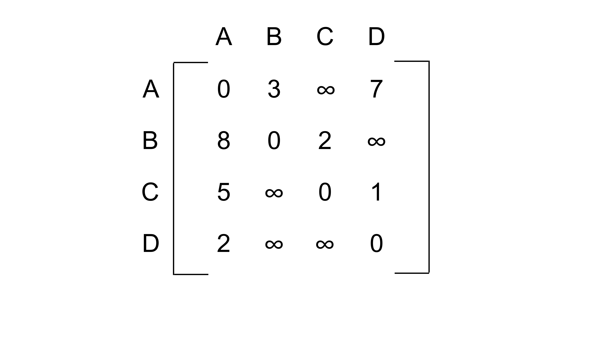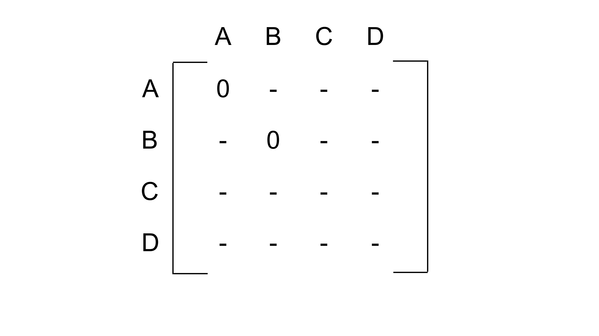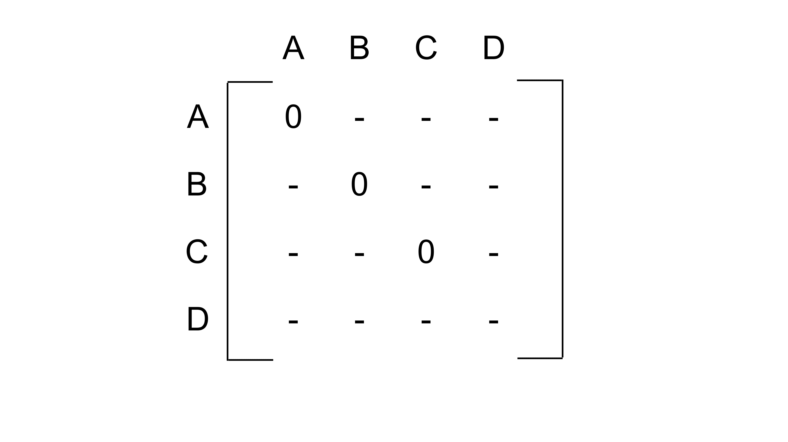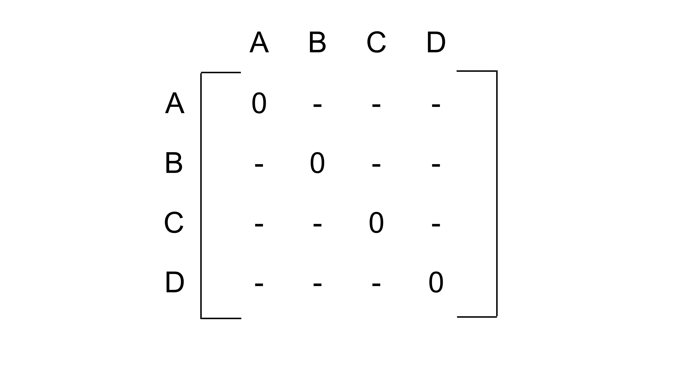
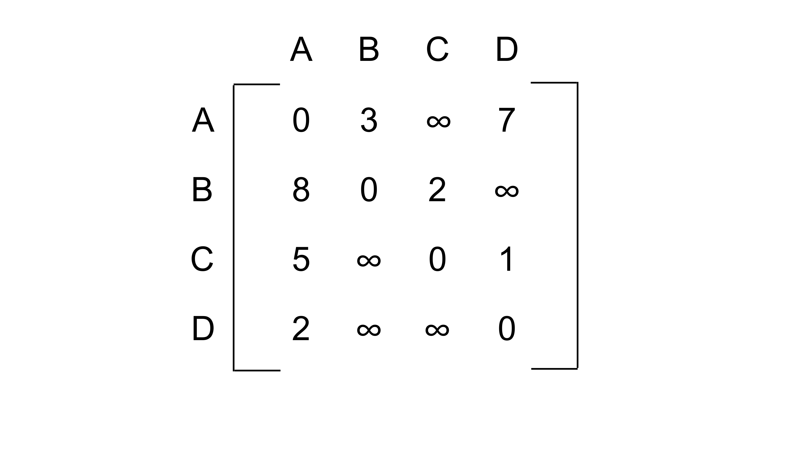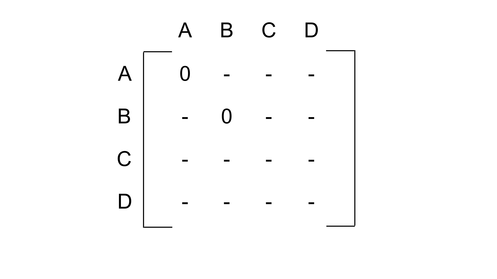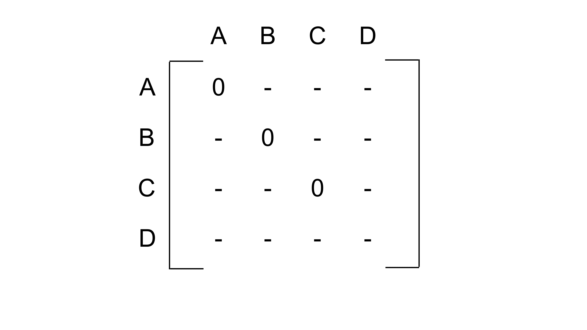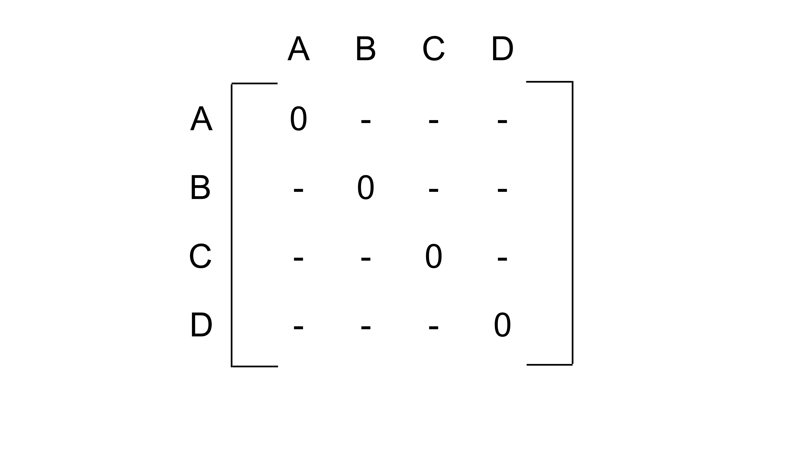

 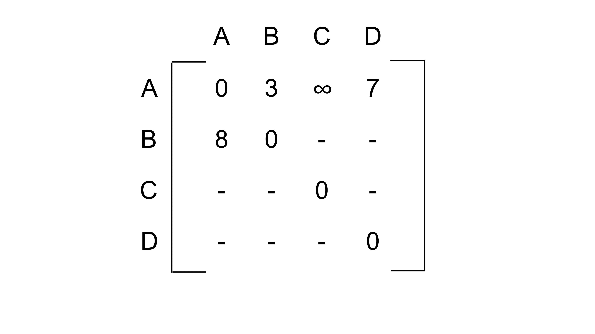
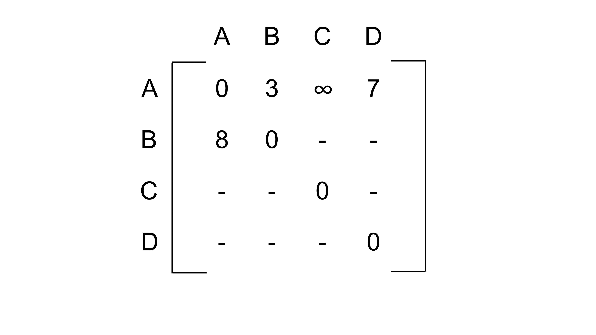


 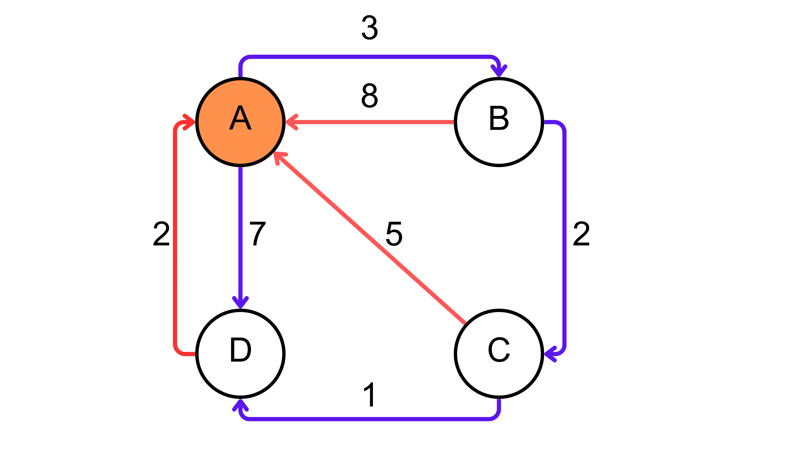
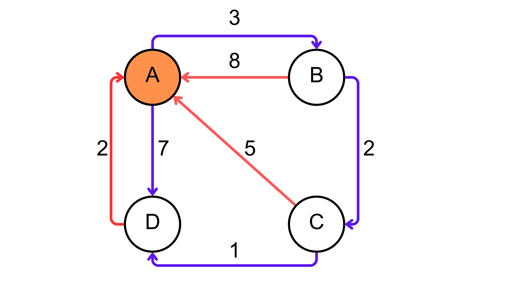 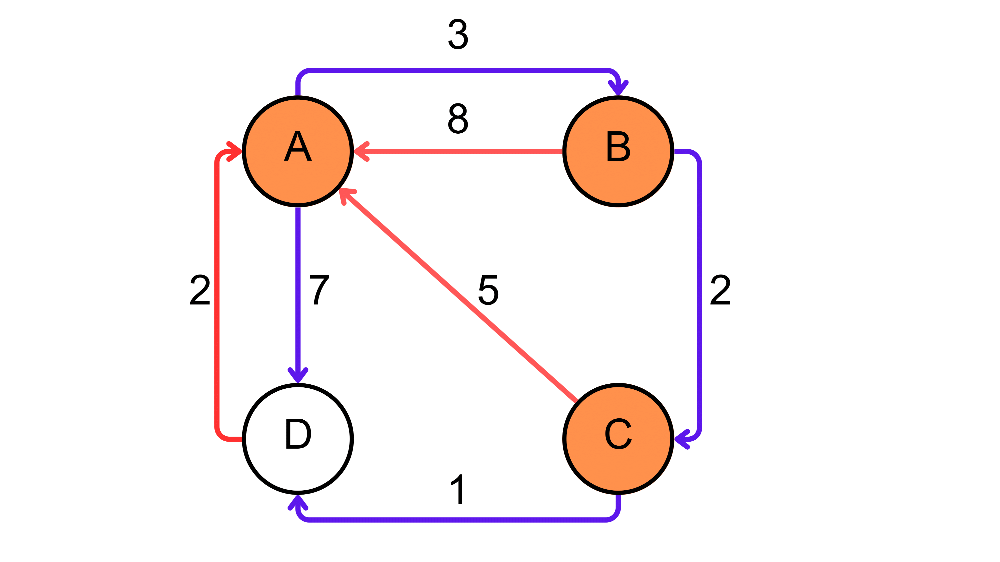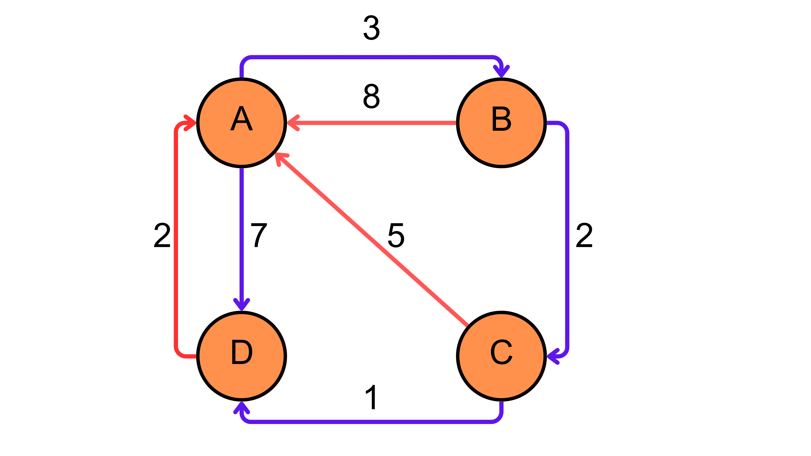
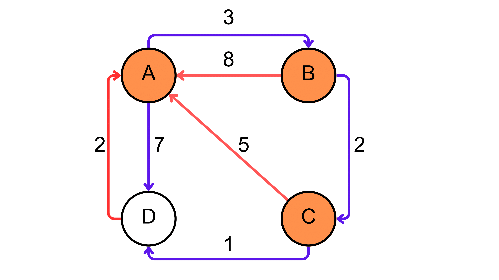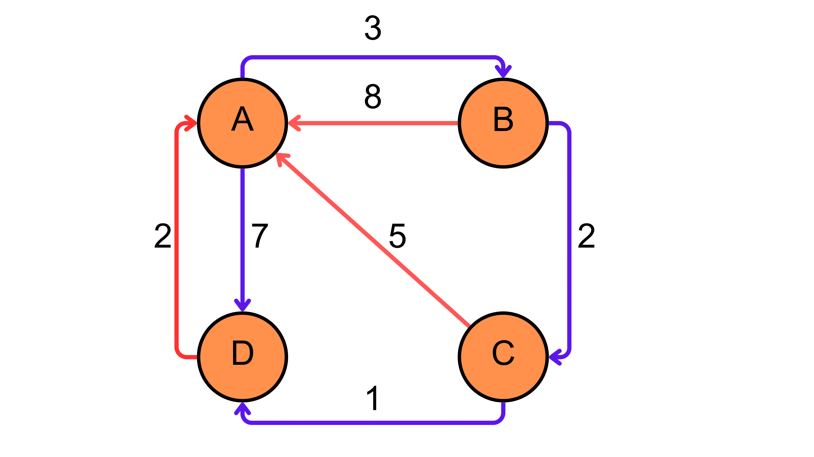


Matriz de Paths
É de grande importância que ambas animações sejam passadas em conjunto